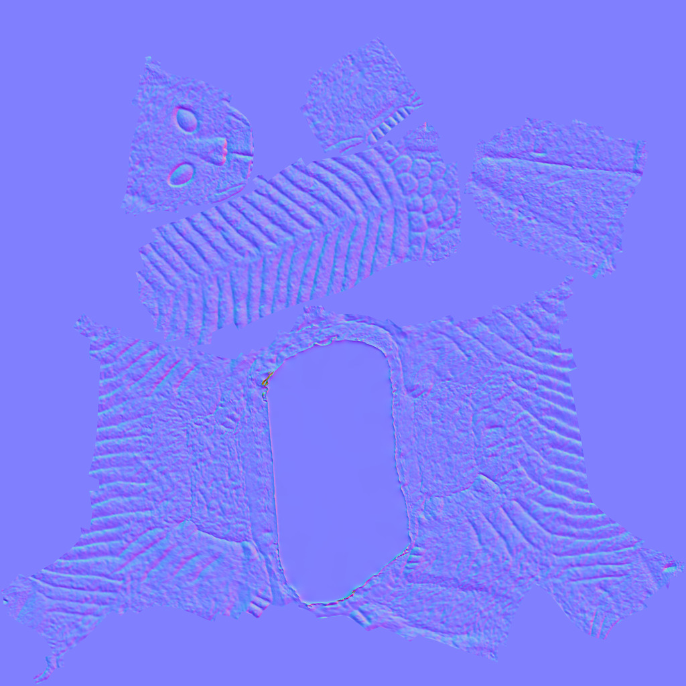
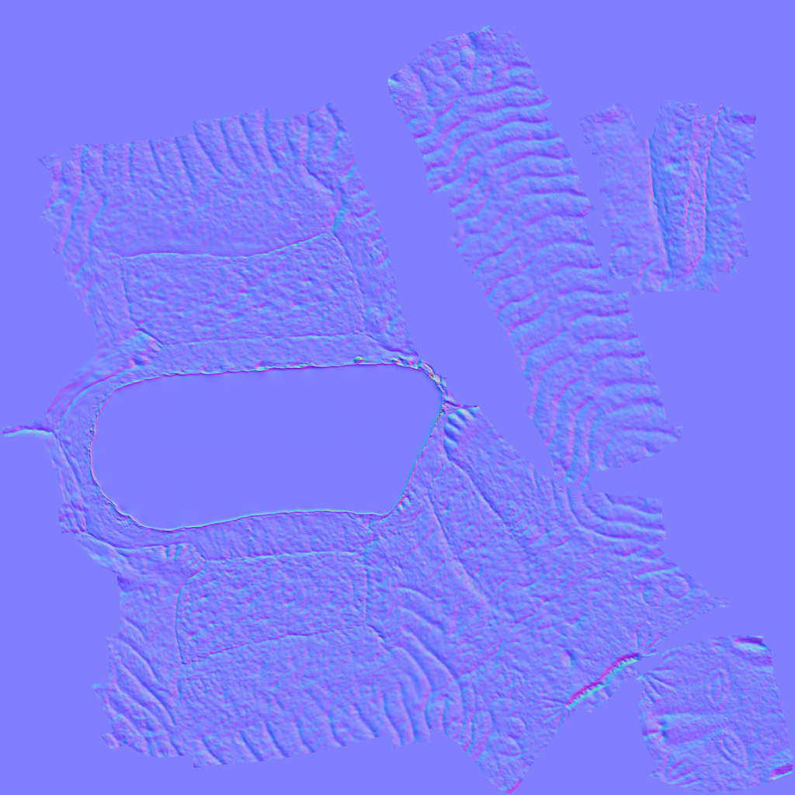

Index · 02
후처리
사용 도구 · ZBrush
스캔된 형태와 표면색을 정리하고, 촬영되지 않은 하부를 보완했습니다.
형태와 표면색 정리

컬러·노멀 맵
컬러 맵은 표면색, 노멀 맵은 표면 방향을 나타냅니다.
컬러 맵

원본 8,192 × 8,192 px

원본 8,192 × 8,192 px
노멀 맵

원본 8,192 × 8,192 px

원본 8,192 × 8,192 px
Index · 02
사용 도구 · ZBrush
스캔된 형태와 표면색을 정리하고, 촬영되지 않은 하부를 보완했습니다.
컬러 맵은 표면색, 노멀 맵은 표면 방향을 나타냅니다.

